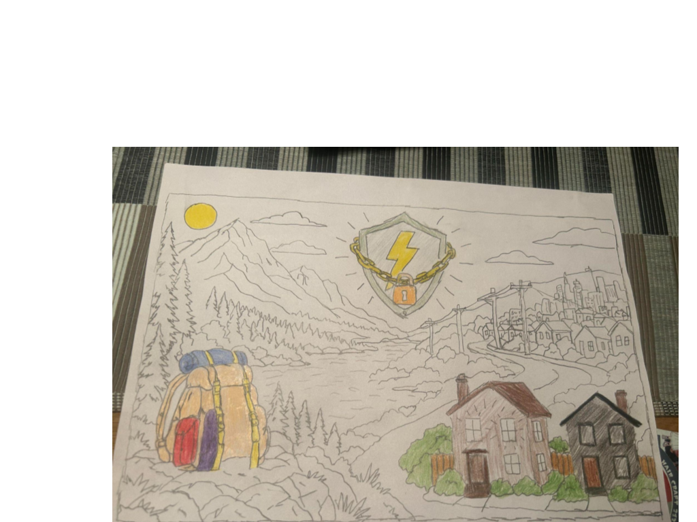

Essential Question: "In a modern developed society, should access to clean, affordable energy be considered a natural right?”
The Issue
The year is 2035, and energy demand has reached record levels. Energy prices keep growing, the grid is under extreme pressure, and many communities experience unreliable or unaffordable energy.
But Why?
The energy crisis has been made worse and worse as years go on, and there are serveral contributing factors.
- Increased Dependence on Technology
- The transition to renewable energy sources
- Artificial Intelligence
- Data Centers
- Electric Vehicles
- Population Growth
- Extreme Weather
These are all major contributing factors to the energy crisis. In order to fight this demand, the US will have to upgrade its entire energy infrastructure. The goal is to provide clean and affordable energy to every US citizen.
Our Belief
We believe that energy should be protected by all levels of government, and that the government should work closely with private entities to ensure equal energy access to every citizen and home in the United States. Furthermore, we believe the government should attempt to make energy as clean and affordable as possible.
The People's Rights
Furthermore, we believe in the idea of individuality. Some people may want to live without this support, but despite that, we should still try to help them out if possible. Though it is at the end of the day the choice of the person that matters, we believe energy access to be a constitutional right that the governemnt should provide to its people. We want to intertwine government and community support while still allowing for individuality and freedom of choice.
Below we have a peice of art to visualize our cause.

With our belief being the protection of energy by the government, we ask the question:
Should access to clean and affordable energy be a natural right?